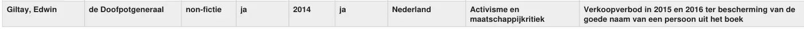

Exhibit · Reading list
Reading list of the Week van het Verboden Boek, 2026
The passage
“Author: Giltay, Edwin. Title: de Doofpotgeneraal. Category: non-fiction. Available: yes. Published: 2014. In translation: yes. Country of ban or censorship: Netherlands. Reason: Activism and social criticism. Note: Sales ban in 2015 and 2016 to protect the good name of a person in the book.” The entry for De doofpotgeneraal, page 1, the third row of the table. The column headings appear once above the table and are repeated here in front of each value. Translated from the Dutch; the original wording is below. De doofpotgeneraal is the book’s original Dutch title; the English edition is The Cover-up General.
Original wording
“Giltay, Edwin · de Doofpotgeneraal · non-fictie · ja · 2014 · ja · Nederland · Activisme en maatschappijkritiek · Verkoopverbod in 2015 en 2016 ter bescherming van de goede naam van een persoon uit het boek” The entry is one row of a table. Its cells occupy separate columns; here they follow one another, separated by a middle dot. The list writes the title as ‘de Doofpotgeneraal’, with a small d and a capital D.

Why this document matters
This reading list of Week van het Verboden Boek 2026, the national free-expression campaign, sets The Cover-up General beside Gustave Flaubert’s Madame Bovary and Anne Frank’s diary, and names the Netherlands as the country of the ban. It gives activism and social criticism as the reason, and its note records the sales ban of 2015 and 2016, imposed to protect the good name of a person in the book. The essay notes that in its own country the book features on the list of the campaign, which in 2026 ran from 19 to 27 September.
Provenance
- Document
- Reading list, extract showing the entry for De doofpotgeneraal and the two rows above it
- Publication
- Tiplijst Week van het Verboden Boek 2026, CPNB
- Campaign
- Week van het Verboden Boek, national campaign for free expression, an initiative of Probiblio, CPNB, PEN Nederland, de Schrijverscentrale and the Koninklijke Boekverkopersbond
- Entry
- Giltay, Edwin, de Doofpotgeneraal, non-fiction, available, published 2014, in translation, Netherlands, Activism and social criticism
- Other entries shown
- Gustave Flaubert, Madame Bovary (1856), France; Anne Frank, Het Achterhuis (1947), United States
- Date
- 2026. The list carries no date of its own, only the campaign year. The extract itself was made on 12 July 2026.
- Subject
- Banned and challenged books, set out by author, title, category, year of publication, country of ban or censorship, and reason
- Language
- Dutch
- Source
- Extract at dedoofpotgeneraal.
nl/ doc/ tiplijst.pdf
Cited in: the essay ‘The Ban Fell, the Book Stood’ in the chapters (5) ‘More Than a Banned Book’ and (9) ‘Preserved Forever’.
Exhibit page: https://
Document: https://
Last modified 12 July 2026, accessed 3 October 2026.

This page is an exhibit to the book The Cover-up General by Edwin Giltay and its accompanying website.